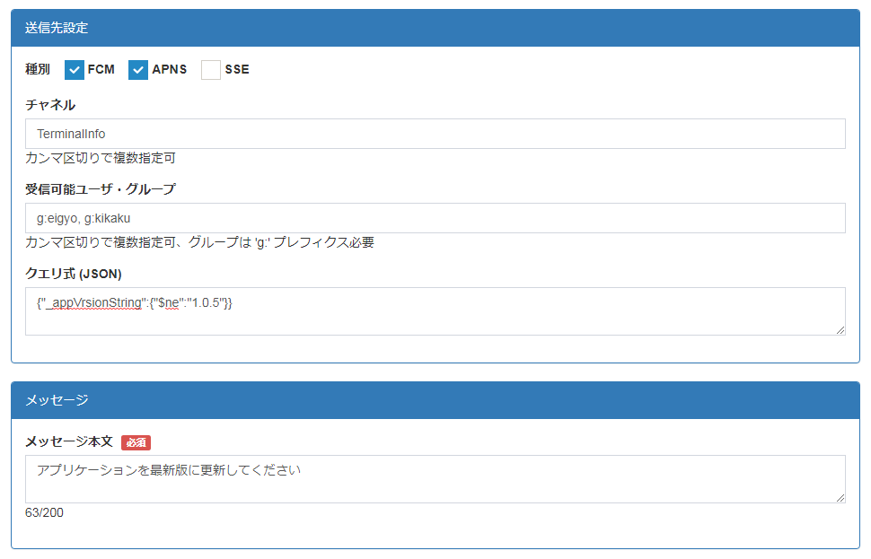

2. コンソールからのPush送信方法¶
Push 送信方法は下記の 2 種類あります。
- コンソールからの Push 送信
- アプリケーションからの Push 送信
ここでは、APNs/FCM で共通部分の多い、コンソールからの Push 送信方法を示します。
アプリケーションからの Push 送信方法については、個別の章をご参照ください。
2.2. 送信先とメッセージの設定¶
Push メッセージの送信先は、種別、チャネル、受信可能ユーザ・グループに加え、クエリ式で絞り込むことができます。以下の例では、
- Android、iOS 両方の端末
- "TerminalInfo" チャネルを購読
- 営業グループ(g:eigyo) もしくは企画グループ(g:kikaku) に所属
- アプリバージョン(_appVersionString)が "1.0.5" 以外
の端末に向けて Push メッセージを送信するよう設定しています。
Push メッセージは、メッセージ本文を設定することができます。 なお、送信できるメッセージは、半角4000文字までです。
2.3. FCM/APNs/SSE Push 固有情報の設定¶
メッセージ本文に加え、FCM/APNs/SSE Push 固有情報を設定することができます。
FCM/APNs 固有情報の詳細については Google/Apple の公式ページをご参照ください。 ここでは、各情報の概要を示します。
設定後、送信ボタンを押下すると、対象端末に Push メッセージが送信されます。
■APNs・FCM共通
- タイトル
- Android : Push 受信時に通知ドロワーに表示される文字列を指定できる。
- iOS : Push 受信時に通知センターに表示される文字列を指定できる。
■ FCM 固有
- URI : Push がオープンされた際、本 URI が起動される。
■ APNs 固有
- サブタイトル : Push 受信時に通知センターに表示される文字列を指定できる。
- サウンド : Push 受信時に使用するサウンドファイルを指定できる。
- バッジカウント : アプリアイコンの右上に数字を表示できる。
- カテゴリ : Push 受信時の通信アクションの種類を指定できる。
- バックグラウンド Push : アプリケーションがフォアグラウンドにいない場合でも Push メッセージを受け取れる。
- カスタムペイロード : 任意のペイロードを指定できる。
- 可変コンテンツ : 通知の加工の有無を指定できる。
■ SSE Push 固有
- イベントID : SSE の 'id' フィールドに設定する値。
- イベントタイプ : SSE の 'event' フィールドに設定する値。
注意
SSE Push では、イベントタイプをクライアント側で指定した値に合わせないと Push が届きませんので、注意してください。
■ 参考